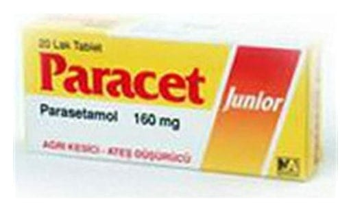

Paracet 160 mg Pediyatrik Film Kaplı Tablet, 20 Tablet

Ne için kullanılır
KT · Bölüm 1• Her bir film kaplı tablet etkin madde olarak 160 mg parasetamol içerir. • PARACET karton kutu içindeki blister ambalajlarda 20 tablet şeklinde sunulmaktadır. • Çocuklarda, hafif ve orta şiddetli ağrılar ile ateşin semptomatik (hastalığı tedavi edici değil, belirtileri giderici) tedavisinde kullanılır.